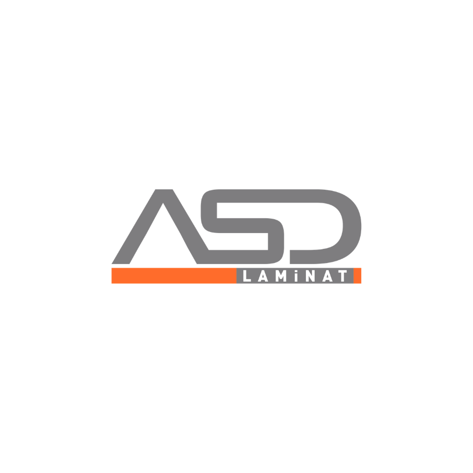
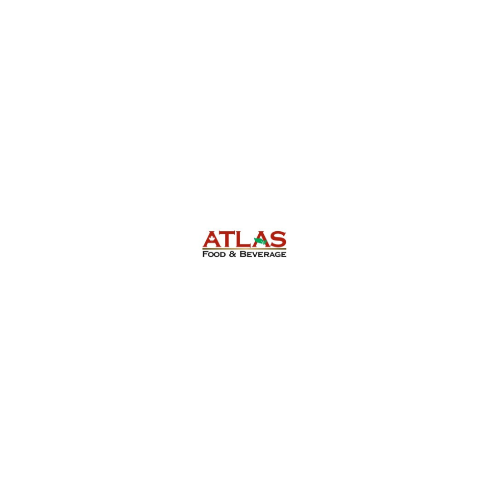
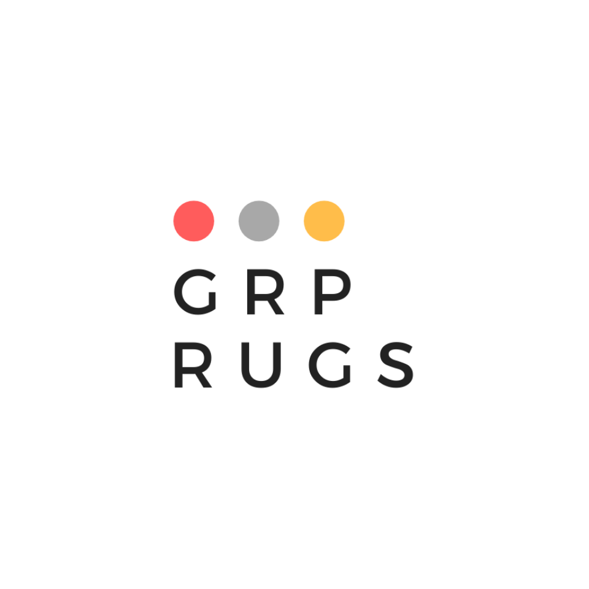
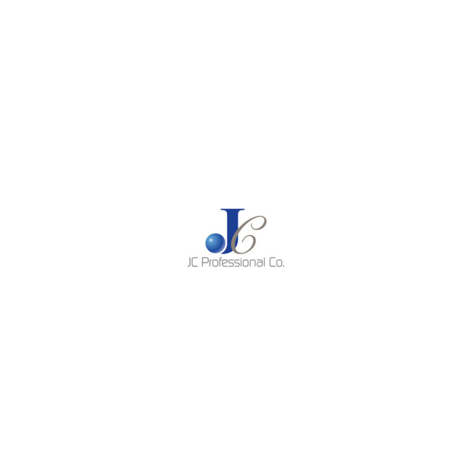
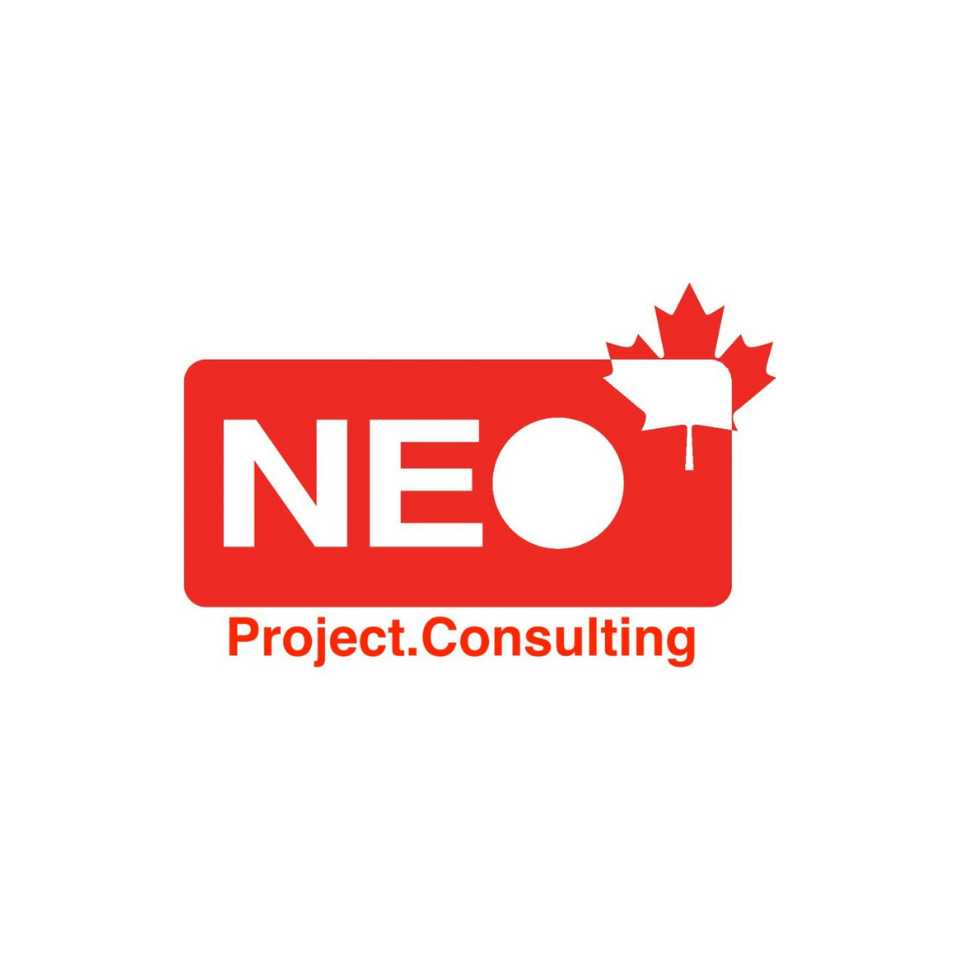

▶2:34Runtime
Read story ↓On hikâye, bir programda, bir yıllıkta.
Foreword · Önsöz
Toronto'dan Konya'ya — bir köprü.
The Canada Türkiye Business Development Hub was founded on a small idea: that a Turkish-Canadian founder in Toronto and a small manufacturer in Konya share more than a flag colour. They share a line of contacts, a way of doing favours, and an unspoken belief that introductions are infrastructure.
This Edition collects ten stories from our membership — businesses we filmed across the GTA over the spring of 2025, with FrameFlow on the camera. The Programme below is the at-a-glance index — ten screenings, in order. Beneath it, each story unfolds at length: a portrait, a quote, a short feature.
Read the Programme to find the screening that speaks to you. Read the Features for the long version.

▶2:34Runtime
Read story ↓
▶2:48Runtime
Read story ↓
▶2:12Runtime
Read story ↓2:18Runtime
Read story ↓
▶2:42Runtime
Read story ↓
▶2:24Runtime
Read story ↓
▶2:36Runtime
Read story ↓2:54Runtime
Read story ↓2:08Runtime
Read story ↓2:46Runtime
Read story ↓— The features —
Below, the long version of each story.
Hikâyelerin uzun hâli, sayfa sayfa.
Shoot specifications
01.
Birinci hikâye — yüzeyler.
ASD Laminat · Surfaces · Manufacturing · Concord ON
A laminate workshop with a workshop's discipline. Started in Bursa, now shipping sheets across the GTA — colour, texture, edge profile, and a cutting line you can hear from the parking lot.
We don't sell sheets. We sell what the sheet ends up holding up.
Shoot specifications
02.
İkinci hikâye — mutfak kapısı.
Atlas Food & Beverage · Food · Distribution · GTA
Mehmet Gedik on what it takes to put Anatolian flavours on Canadian shelves — sourcing, customs, the long phone calls home, and the Tuesday route through every Turkish grocer between Etobicoke and Pickering.
If the chef trusts the box, the chef trusts the spice.
Shoot specifications
03.
Üçüncü hikâye — ilk faturadan ilk denetime.
Aydin CPA · Accounting · North York ON
A bilingual CPA practice where calls are taken in two languages and explanations are given in three. We filmed a morning at the firm — HST returns on the wall, the founder's daughter at the front desk, the founder himself on a call to a client in Mersin.
The first audit is a small ceremony. We try to make it feel that way.
— A proverb —
Komşu komşunun külüne muhtaçtır.
A neighbour needs even the ashes of his neighbour.
Anatolian saying · still useful
Shoot specifications
04.
Dördüncü hikâye — defter.
Bookkeeping Bizz · Small Business · Toronto ON
Cloud-first, plain-spoken, monthly. A practice built for founders who want to know their numbers but don't want a spreadsheet relationship — and who'd like a real human on the email when something feels off in March.
A clean ledger is the cheapest sleep aid in the GTA.
Shoot specifications
05.
Beşinci hikâye — halı.
GRP Rugs · Home · Retail · Concord ON
A rug warehouse the size of a city block, organised by colour, fibre, knots-per-inch and country of origin. The buyer keeps three phone numbers in one rotation: a weaver in Anatolia, a designer in Yorkville, and a builder in Markham.
Every rug is a flat house. We pay attention to its rooms.
Shoot specifications
06.
Altıncı hikâye — uzun konuşma.
JC Professional Co. · Tax & Advisory · Toronto ON
A multi-disciplinary practice with the rare habit of taking the long conversation before any of the short ones. Tax, audit, advisory, and the gentle work of explaining a Canadian financial system to founders who learned a different one first.
Numbers are a second language for most of our clients. We take care with the translation.
Shoot specifications
07.
Yedinci hikâye — şantiye.
NEO Project Consulting · Consulting · Mississauga ON
Project management for new builds and reno gut-jobs. Site visits between Mississauga and Markham, drawings that translate three trades into one schedule, and a foreman's clipboard that has a Pantone chip taped to the back.
A schedule that the trades respect is the only kind of schedule.
Shoot specifications
08.
Sekizinci hikâye — geliş.
Northern Pathways Immigration · Consulting · Toronto ON
A regulated immigration practice with a particular kind of empathy — the consultants are former applicants. Express Entry, study permits, the slow files, and the small celebrations on the day a PR card lands in the mailbox.
A file is a person. We try to remember that on the days the system forgets.
Shoot specifications
09.
Dokuzuncu hikâye — ince çizgi.
Sapphirus · Lifestyle · Toronto ON
Built between Istanbul and Toronto with a logo as taut as a drawn bowstring. We filmed the workshop, the model, and the moment the line is finally hung in store — six minutes of dailies edited into a two-minute argument.
A mark earns its line every time you see it on a shelf.
Shoot specifications
10.
Onuncu hikâye — Ege'den.
Urla Fine Foods · Food · Specialty · Etobicoke ON
Olive oil, pepper paste, sun-dried tomato, and a founder who still calls the village every Sunday. Filmed in the warehouse that smells, faintly, of summer — and at a kitchen-table tasting that ran twenty minutes longer than it was supposed to.
An olive oil is a place. We're trying to bottle ours honestly.
Stage Black
#0A0A0A
CTBDH Red
#B91D1D
Cream
#F4EEE2
Paper
#EBE2CF
Display · Fraunces Italic
Aa Bb · 0123
Subhead · Inter 500
An edition of ten stories.
Body · Inter 400
A network of Turkish-Canadian small and medium enterprises across the GTA.
Mono Label
Concord · Toronto · MMXXV
Türkçe · Italic
Komşu komşunun külüne muhtaçtır.
A red-on-black mark for the network — the lower-case ct ligature where C and T share a single curve, plus a bilingual wordmark and a brand kit for member businesses to flag their CTBDH affiliation.
1identity system
Ten commercial business-story films — one for each member. Filmed on location at workshops, warehouses, offices and shops across the GTA. 16:9 master delivered with 1:1 and 9:16 cut-downs for social.
10films · 16:9
— Colophon —
Sıradaki bölümü siz yazın.
Volume II is being assembled. If you run a Turkish-Canadian business with a story worth filming — or you'd like to host the next print night — write us.
Submit a story →